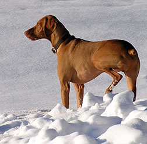

I have had pet cats, dogs, hamsters, a horse, and a bunny. I remember them all, but my favorite pet of all time is my dog. He is happy to welcome me home each day. He never seems to have a bad day and brightens my day. His easy going demeanor makes for a good companion. He is predictable, gentle, and always on the ready for adventure.
My dog motivates and requires me to get out into the hills for off-leash exercise. Though he is constantly running, I am able to slow down while walking him, my attention is easily drawn to nature’s detail. I notice the first beautiful buttercups in the field early spring or the colorful balsamroot in fall.
Like my dog, the Vizsla breed is easily recognized by a sleek golden-rust coat. They can stand between 21 to 24 inches at the shoulder and are the picture of a lean, light-footed hunter’s companion. The long, silky ears frame a facial expression that is sensitive and loving around the house and intense when at work. As a hunter expected to work closely with humans, Vizslas form a tight bond with their owners and hate to be left alone. Some call them the “Velcro” dog. Through photography, I strive to capture his facial expressions, his soft ears, his energy and intensity. It is difficult to capture a running dog!